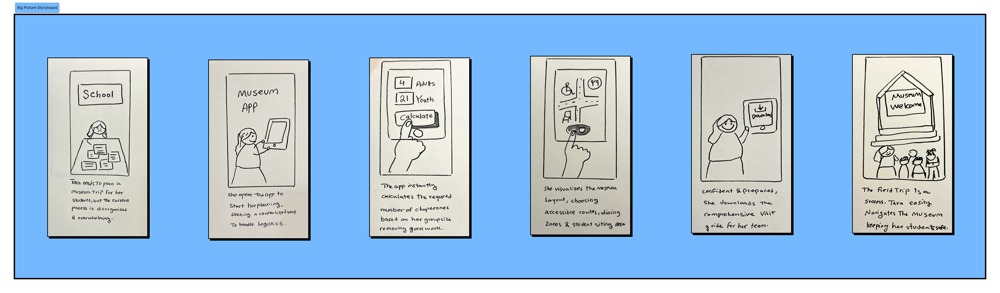
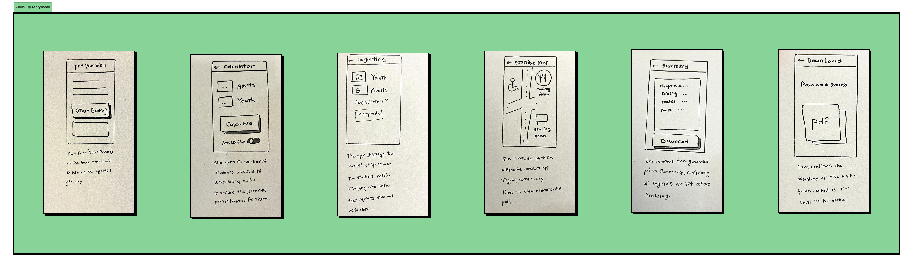
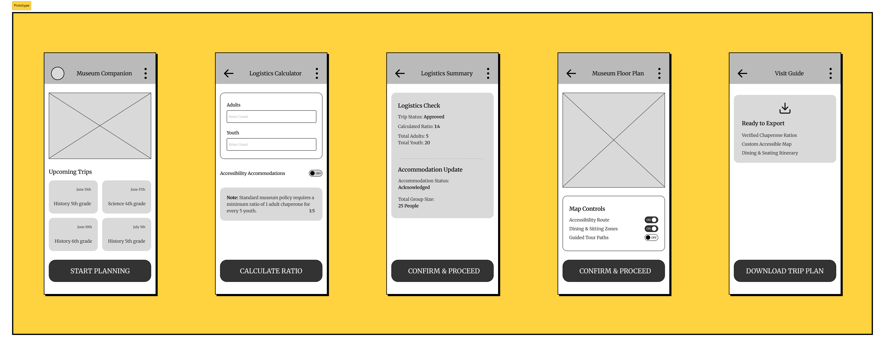
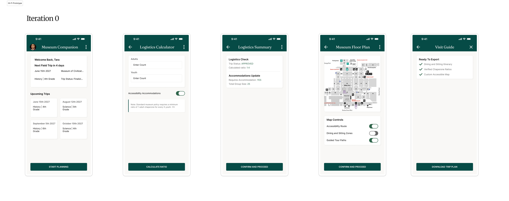
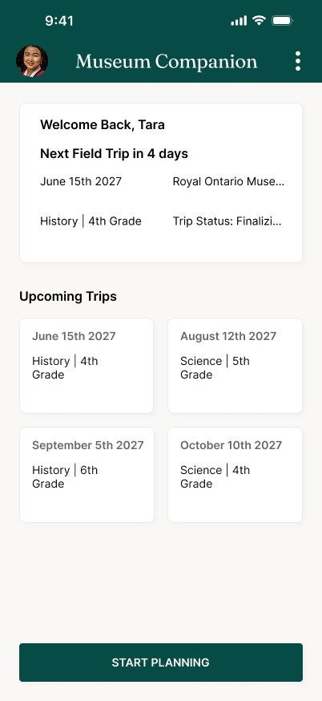
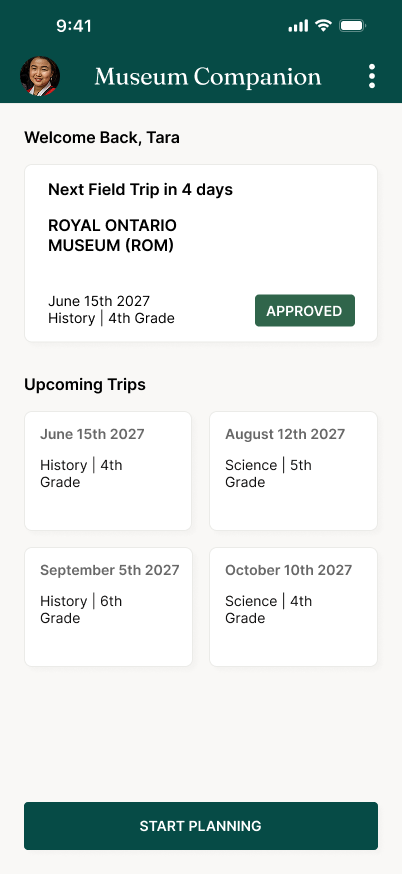
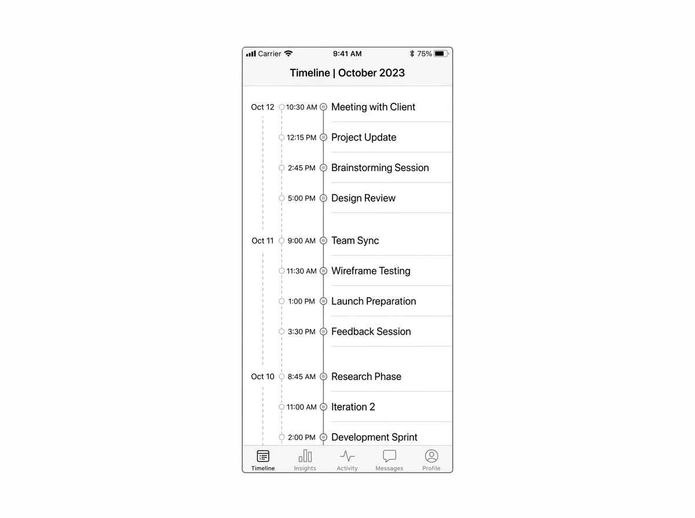
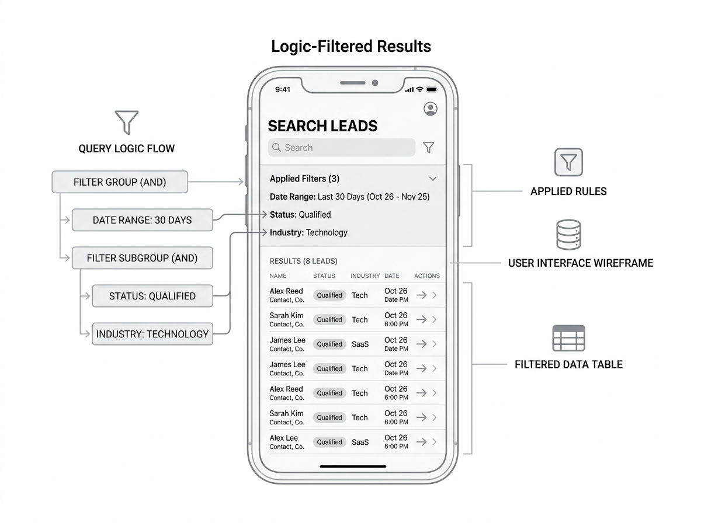

The Museum Companion
Project Overview
The Museum Planning Companion is a digital tool designed to bridge the gap between educational goals and logistical reality. By providing a centralized planning space, it transforms the field trip experience for educators, allowing them to focus on learning rather than logistics.
The Problem
Tara, an elementary school teacher managing groups of 20+ students, struggles to maintain group safety and cohesion because she lacks a centralized tool to calculate required chaperone-to-student ratios and obtain a clear, accessibility-aware guide for movement, dining, and seating within the museum.
Big Picture Storyboard
The following storyboard illustrates Tara’s journey from the frustration of manual, disorganized coordination to the confidence of a prepared, data-driven visit. It visualizes how the app acts as a bridge, allowing her to focus less on administration and more on the learning experience.

Close-Up Storyboard
The Close-Up storyboard details the specific product interactions Tara uses to achieve her goal. This walkthrough highlights the flow of actions within the museum app.

Prototype
This prototype demonstrates the "Universal Design with Dynamic Defaults" approach. By remembering Tara's accessibility needs from the calculator step, the system dynamically adapts the floor plan to highlight necessary routes, dining, and seating areas automatically.

Iteration 0: The Functional MVP Blueprint
Established core user flows for logistics calculation and floor plan generation to prioritize rapid task completion for educators.

Systems Optimization & Defensive Design
I designed for dynamic backend data rather than static screens. Reviewing the initial iteration revealed production vulnerabilities that necessitated structural layout overhauls.

Phase 0 • MVP

Phase 1 • Patch
The Text-Wrap Fix

Phase 2 • Layout
The Linear Timeline

Phase 3 • System
Logic-Filtered Data
System Validation & Usability Testing
Validated interface architecture through targeted usability studies, focusing on task execution velocity and cognitive load reduction for high-stakes logistics management.
The Testing Methodology
I benchmarked the interactive prototype against a core user scenario: "As an educator, log in, verify the approval status of your upcoming trip, calculate the mandatory chaperone-to-student ratio for 25 youth, and export an accessible route map."
P0 - CRITICAL FRAMEWORK
Insight 1: Logic-Filtered Clarity
The Data: 100% of participants successfully identified the status of the immediate upcoming trip within 2.5 seconds of dashboard landing.
The Impact: This validated the Phase 3 architectural shift. Removing the duplicated trip ID from the pipeline list eliminated scanning confusion, proving that backend filtering logic directly minimizes user cognitive load.
P1 - USER EXPERIENCE ITERATION
Insight 2: Operational Data Validation
The Data: Educators noted that the "Student Slips" ratio was the most critical administrative metric on the screen.
The Impact: During testing, users requested an immediate action trigger directly from the card state. This behavioral insight justifies a future iteration: introducing a "Send Reminder Ping" micro-action toggle directly inside the pending trip component to close the administrative loop faster.
P0 - SYSTEM COMPLIANCE REGULATION
Insight 3: Form Input Optimization
The Data: The "Dynamic Defaults" system reduced form calculation errors to 0%.
The Impact: By automatically loading the school's standard policy ratio constraints directly into the Logistics Calculator, users didn't have to calculate human resource requirements manually—preventing legal compliance errors before trip finalization.
Design Readiness & Compliance
| Quality Assurance Criteria | System Resolution | Status |
|---|---|---|
| Data Asset Finalization | All wireframe placeholders, generic icons, and clipped server strings replaced with high-density production assets. | ✓ PASSED |
| Platform Design Patterns | Adheres directly to mobile human interface standards using bottom-anchored thumb-zone action keys and clear navigation hierarchy. | ✓ PASSED |
| Defensive Error Boundaries | Logistics engine runs automatic server-side calculation checks to block compliance progression if legal chaperone ratios fail. | ✓ PASSED |
| Inclusive Accessibility | Features direct dynamic toggle layers to adjust map views for physical mobility accommodations, dining spacing, and low-stress navigation. | ✓ PASSED |
Inclusive Design & Accessibility
To ensure Museum Companion supports all educators, I integrated accessibility considerations at both the functional and visual levels:
Functional Accessibility: I prioritized the inclusion of physical accessibility features directly into the navigation flow. The Map Controls feature a toggle for "Accessibility Route," and the Logistics Calculator includes an "Accessibility Accommodations" toggle, ensuring special requirements are captured as a core part of the trip planning process.
Visual & Cognitive Hierarchy: I utilized a high-contrast color palette—pairing deep green text against light, neutral backgrounds—to meet WCAG guidelines. Furthermore, the structured, card-based layout creates a clear visual hierarchy that minimizes cognitive load, allowing educators to scan information and complete tasks efficiently without feeling overwhelmed by data.